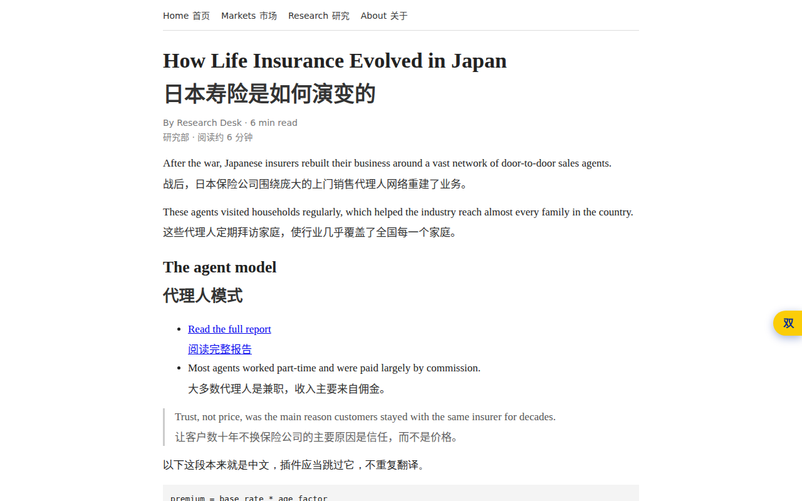
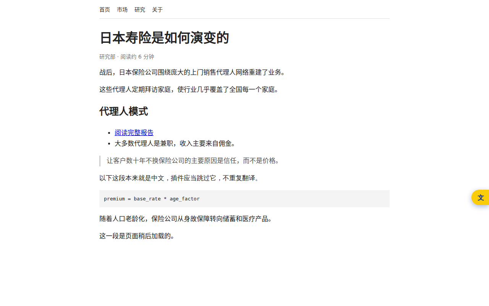
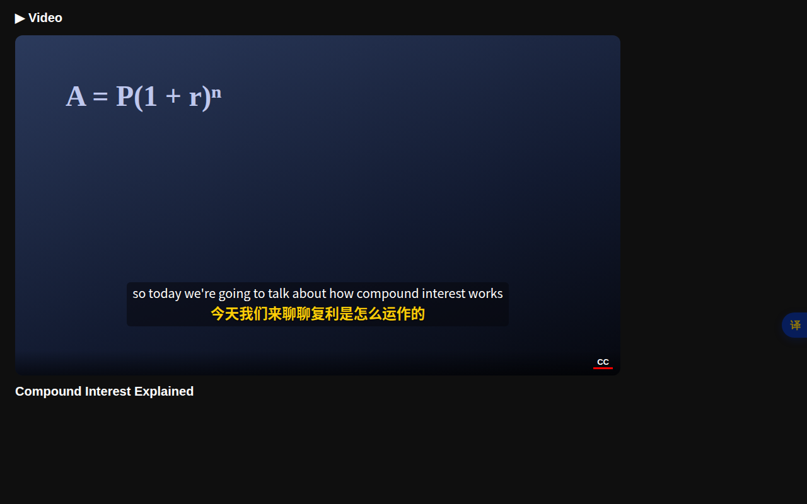
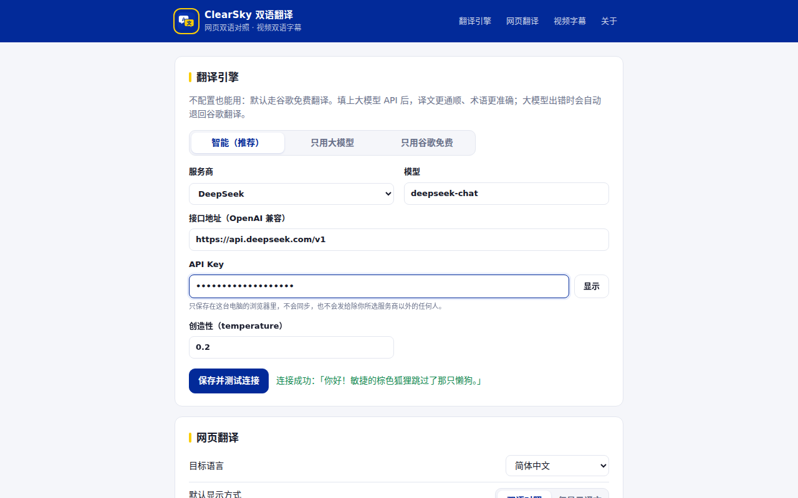

网页双语对照，或者整页只看中文；YouTube 字幕自动变成中英双语。可以接自己的大模型，也可以什么都不配、装上就用。
读研报、看外媒、查资料时，最怕来回切换。双语对照把译文放在每一段原文下面，一眼对照，不丢上下文。

不想看原文时，切到「仅显示译文」：页面排版保持原样，链接照常能点，浏览器标签页标题也一并翻译。
⌥ A、右键菜单、工具栏图标都能触发
在 YouTube 打开视频，插件自动开启字幕并换成中英双语：原文在上，黄色译文在下。直播也能用。

零配置就能用：微软、谷歌两个免费翻译引擎互为备份，国内通常不用代理。填上 API Key 后交给大模型：栏目名会意译，专有名词带书名号，术语更准。

插件平时不读取任何网页。只有你点图标、按快捷键或用右键菜单时，才临时访问当前这一个标签页。
要翻译的文字只发给你选的翻译服务。不收集浏览记录，没有广告，没有统计代码。
API Key 保存在本机浏览器的 storage.local 里，不同步、不上传，只在调用你选的服务商时使用。
上架后从 Chrome 应用商店一键安装。点工具栏的拼图图标，把 ClearSky 固定出来。
点插件图标 →「翻译此页面」，或者按 ⌥ A。再按一次恢复原文。
打开任意 YouTube 视频，双语字幕会自动出现。想要更好的译文，在设置页填上大模型 Key。